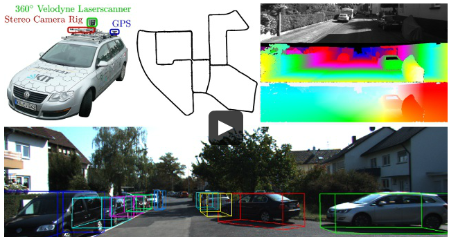

相关科研工作者
Paper List
- [CVPR-2019] High-level Semantic Feature Detection:A New Perspective for Pedestrian Detection
- [CVPR-2019] SSA-CNN: Semantic Self-Attention CNN for Pedestrian Detection
- [CVPR-2019] Pedestrian Detection in Thermal Images using Saliency Maps
- [TIP-2018] Too Far to See? Not Really:- Pedestrian Detection with Scale-Aware Localization Policy
- [ECCV-2018] Bi-box Regression for Pedestrian Detection and Occlusion Estimation
- [ECCV-2018] Learning Efficient Single-stage Pedestrian Detectors by Asymptotic Localization Fitting
- [ECCV-2018] Graininess-Aware Deep Feature Learning for Pedestrian Detection
- [ECCV-2018] Occlusion-aware R-CNN: Detecting Pedestrians in a Crowd
- [ECCV-2018] Small-scale Pedestrian Detection Based on Somatic Topology Localization and Temporal Feature Aggregation
- [CVPR-2018] Improving Occlusion and Hard Negative Handling for Single-Stage Pedestrian Detectors
- [CVPR-2018] Occluded Pedestrian Detection Through Guided Attention in CNNs
- [CVPR-2018] Repulsion Loss: Detecting Pedestrians in a Crowd
- [TCSVT-2018] Pushing the Limits of Deep CNNs for Pedestrian Detection
- [Trans Multimedia-2018] Scale-aware Fast R-CNN for Pedestrian Detection
- [TPAMI-2017] Jointly Learning Deep Features, Deformable Parts, Occlusion and Classification for Pedestrian Detection
- [BMVC-2017] PCN: Part and Context Information for Pedestrian Detection with CNNs
- [CVPR-2017] CityPersons: A Diverse Dataset for Pedestrian Detection
- [CVPR-2017] Learning Cross-Modal Deep Representations for Robust Pedestrian Detection
- [CVPR-2017] What Can Help Pedestrian Detection?
- [ICCV-2017] Multi-label Learning of Part Detectors for Heavily Occluded Pedestrian Detection
- [ICCV-2017] Illuminating Pedestrians via Simultaneous Detection & Segmentation
- [TPAMI-2017] Towards Reaching Human Performance in Pedestrian Detection
- [Transactions on Multimedia-2017] Scale-Aware Fast R-CNN for Pedestrian Detection
- [CVPR-2016] Semantic Channels for Fast Pedestrian Detection
- [CVPR-2016] How Far are We from Solving Pedestrian Detection?
- ![CVPR-2016] Pedestrian Detection Inspired by Appearance Constancy and Shape Symmetry
- ![CVPR-2016] Semantic Channels for Fast Pedestrian Detection
- ![ECCV-2016] Is Faster R-CNN Doing Well for Pedestrian Detection?
- [CVPR-2015] Taking a Deeper Look at Pedestrians
- ![ICCV-2015] Learning Complexity-Aware Cascades for Deep Pedestrian Detection
- [ICCV-2015] Deep Learning Strong Parts for Pedestrian Detection
- ![ECCV-2014] Deep Learning of Scene-specific Classifier for Pedestrian Detection
- [CVPR-2013] Joint Deep Learning for Pedestrian Detection
- [CVPR-2012] A Discriminative Deep Model for Pedestrian Detection with Occlusion Handling
- [CVPR-2010] Multi-Cue Pedestrian Classification With Partial Occlusion Handling
- [CVPR-2009] Pedestrian detection: A benchmark
- [CVPR-2008] People-Tracking-by-Detection and People-Detection-by-Tracking
- [ECCV-2006] Human Detection Using Oriented Histograms of Flow and Appearance
- [CVPR-2005] Histograms of Oriented Gradients for Human Detection
论文
[CVPR-2019] Adaptive NMS: Refining Pedestrian Detection in a Crowd

[CVPR-2019] High-level Semantic Feature Detection:A New Perspective for Pedestrian Detection

- paper: https://arxiv.org/abs/1904.02948
- github: https://github.com/liuwei16/CSP
[CVPR-2019] SSA-CNN: Semantic Self-Attention CNN for Pedestrian Detection

[CVPR-2019] Pedestrian Detection in Thermal Images using Saliency Maps
[TIP-2018] Too Far to See? Not Really: Pedestrian Detection with Scale-Aware Localization Policy

- paper:
- project website:
- slides:
- github:
[Transactions on Multimedia-201８] Scale-Aware Fast R-CNN for Pedestrian Detection

- paper: https://ieeexplore.ieee.org/abstract/document/8060595/
- project website:
- slides:
- github:
[ECCV-2018] Bi-box Regression for Pedestrian Detection and Occlusion Estimation


- arxiv:
- paper:http://openaccess.thecvf.com/content_ECCV_2018/papers/CHUNLUAN_ZHOU_Bi-box_Regression_for_ECCV_2018_paper.pdf
- slides:
- github:
[ECCV-2018] Learning Efficient Single-stage Pedestrian Detectors by Asymptotic Localization Fitting

- arxiv:
- paper:http://openaccess.thecvf.com/content_ECCV_2018/papers/Wei_Liu_Learning_Efficient_Single-stage_ECCV_2018_paper.pdf
- project website:
- slides:
- github:
[ECCV-2018] Graininess-Aware Deep Feature Learning for Pedestrian Detection

- arxiv:
- paper:http://openaccess.thecvf.com/content_ECCV_2018/papers/Chunze_Lin_Graininess-Aware_Deep_Feature_ECCV_2018_paper.pdf
- project website:
- slides:
- github:
[ECCV-2018] Occlusion-aware R-CNN: Detecting Pedestrians in a Crowd

- arxiv:http://arxiv.org/abs/1807.08407
- project website:
- slides:
- github:
[ECCV-2018] Small-scale Pedestrian Detection Based on Somatic Topology Localization and Temporal Feature Aggregation

- arxiv:https://arxiv.org/abs/1807.01438
- project website:
- slides:
- github:
[CVPR-2018] Improving Occlusion and Hard Negative Handling for Single-Stage Pedestrian Detectors

- arxiv:
- paper: http://vision.snu.ac.kr/projects/partgridnet/data/noh_2018.pdf
- project website: http://vision.snu.ac.kr/projects/partgridnet/
- slides:
- github:
[CVPR-2018] Occluded Pedestrian Detection Through Guided Attention in CNNs

- arxiv:
- paper: http://openaccess.thecvf.com/content_cvpr_2018/papers/Zhang_Occluded_Pedestrian_Detection_CVPR_2018_paper.pdf
- project website:
- slides:
- github:
[CVPR-2018] Repulsion Loss: Detecting Pedestrians in a Crowd

- arxiv:http://arxiv.org/abs/1711.07752
- project website:
- slides:
- github:
- blog: https://zhuanlan.zhihu.com/p/41288115
[TPAMI-2017] Jointly Learning Deep Features, Deformable Parts, Occlusion and Classification for Pedestrian Detection

- paper: https://ieeexplore.ieee.org/abstract/document/8008790/
- project website:
- slides:
- github caffe:
[BMVC-2017] PCN: Part and Context Information for Pedestrian Detection with CNNs

- arxiv: https://arxiv.org/abs/1804.044838
- project website:
- slides:
- github caffe:
[CVPR-2017] CityPersons: A Diverse Dataset for Pedestrian Detection

- arxiv: http://arxiv.org/abs/1702.05693
- project website:
- slides:
- github caffe:
[CVPR-2017] Learning Cross-Modal Deep Representations for Robust Pedestrian Detection

- arxiv: https://arxiv.org/abs/1704.02431
- project website:
- slides:
- github caffe:


[CVPR-2017] What Can Help Pedestrian Detection?
- arxiv: https://arxiv.org/abs/1704.02431
- project website:
- slides:
- github caffe:
[TPAMI-2017] Towards Reaching Human Performance in Pedestrian Detection
- paper: http://ieeexplore.ieee.org/document/7917260/
- arxiv:
- project website:
- slides:
- github caffe:
[ICCV-2017] Multi-label Learning of Part Detectors for Heavily Occluded Pedestrian Detection
- paper: http://openaccess.thecvf.com/content_ICCV_2017/papers/Zhou_Multi-Label_Learning_of_ICCV_2017_paper.pdf
- arxiv:
- project website:
- slides:
[ICCV-2017]Illuminating Pedestrians via Simultaneous Detection & Segmentation

- arxiv: https://arxiv.org/abs/1706.08564
- project website: http://cvlab.cse.msu.edu/project-pedestrian-detection.html
- slides:
- github caffe: https://github.com/garrickbrazil/SDS-RCNN
[CVPR-2016] Semantic Channels for Fast Pedestrian Detection

- paper: https://www.cv-foundation.org/openaccess/content_cvpr_2016/papers/Costea_Semantic_Channels_for_CVPR_2016_paper.pdf
- project website:
- slides:
- github caffe:
[CVPR-2016] How Far areWe from Solving Pedestrian Detection?
- paper: https://www.cv-foundation.org/openaccess/content_cvpr_2016/app/S06-29.pdf
- project website:
- slides:
- github caffe:
[ICCV-2015] Deep Learning Strong Parts for Pedestrian Detection

- paper: https://www.cv-foundation.org/openaccess/content_iccv_2015/html/Tian_Deep_Learning_Strong_ICCV_2015_paper.htmler.html
- project website:
- slides:
- github caffe:
[CVPR-2013] Joint Deep Learning for Pedestrian Detection Wanli

- paper: https://www.cv-foundation.org/openaccess/content_iccv_2013/html/Ouyang_Joint_Deep_Learning_2013_ICCV_paper.html
- project website:
- slides:
- github caffe:
[CVPR-2012] A Discriminative Deep Model for Pedestrian Detection with Occlusion Handling

- paper: http://mmlab.ie.cuhk.edu.hk/pdf/ouyangWcvpr2012.pdf
- paper: https://ieeexplore.ieee.org/abstract/document/6248062/
- project website:
- slides:
- github caffe:
[CVPR-2010] Multi-Cue Pedestrian Classification With Partial Occlusion Handling

- paper: https://ieeexplore.ieee.org/abstract/document/5540111/
- project website:
- slides:
- github caffe:
行人检测数据集
CityPersons

CityPersons数据集是在Cityscapes数据集基础上建立的，使用了Cityscapes数据集的数据，对一些类别进行了精确的标注。该数据集是在[CVPR-2017] CityPersons: A Diverse Dataset for Pedestrian Detection这篇论文中提出的，更多细节可以通过阅读该论文了解。
上图中左侧是行人标注，右侧是原始的CityScapes数据集。
文件格式
1 | #评测文件 |
注释文件格式1
2
3
4
5
6
7
8
9
10
11
12
13
14
15
16
17
18
19
20
21
22
23
24CityPersons annotations
(1) data structure:
one image per cell
in each cell, there are three fields: city_name; im_name; bbs (bounding box annotations)
(2) bounding box annotation format:
one object instance per row:
[class_label, x1,y1,w,h, instance_id, x1_vis, y1_vis, w_vis, h_vis]
(3) class label definition:
class_label =0: ignore regions (fake humans, e.g. people on posters, reflections etc.)
class_label =1: pedestrians
class_label =2: riders
class_label =3: sitting persons
class_label =4: other persons with unusual postures
class_label =5: group of people
(4) boxes:
visible boxes [x1_vis, y1_vis, w_vis, h_vis] are automatically generated from segmentation masks;
(x1,y1) is the upper left corner.
if class_label==1 or 2
[x1,y1,w,h] is a well-aligned bounding box to the full body ;
else
[x1,y1,w,h] = [x1_vis, y1_vis, w_vis, h_vis];
Caltech


KITTI
